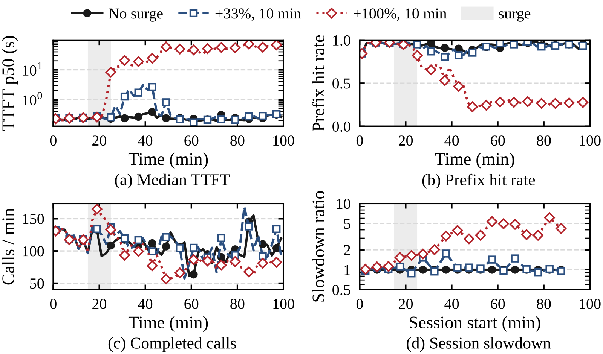
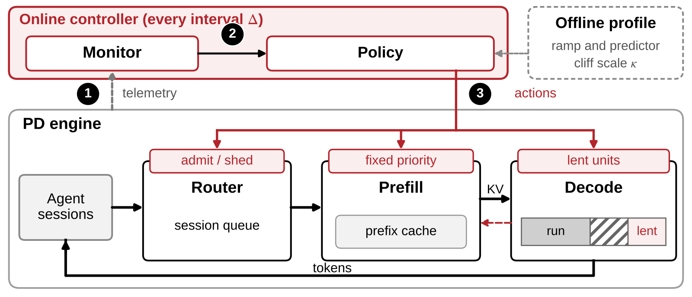

Contents · 8 sections
1What problem is it solving?2Evidence on a real system3Why utilization metrics miss it4How Basin works5Results6Limitations as I see them7How a serving team could try it8VerdictSHARE
A ten-minute traffic surge can leave an agent serving engine with prefill and decode disaggregated unable to recover. After the surge ends and traffic returns to a level the engine handled before, goodput (sessions completed within target) on SGLang stays about 88% lower over the following hour, and utilization and queue length give almost no warning beforehand. Each agent call resends an ever-longer conversation to the model and relies on prefix caching to skip the recomputation. Behind it is a loop: too little cache causes recomputation, calls slow down, sessions end later, more context is live at once, and the cache falls even shorter. Based on this, the authors build Basin. It predicts the largest context each session will reach, reserves that amount from a total budget that adapts to the hit rate, and queues new sessions when the budget runs out. On real H200s, a simplified prototype without the predictor already reaches 1.20 to 1.70 times the goodput of Continuum, the strongest prior system.
Teams serving agents should read this. The main contribution is not yet another scheduler; it is a clear account of one failure: the base load stays below what the engine can handle, yet after one short surge the service gets stuck in a bad state it cannot leave. The authors find the cause with interventions on a real system, use a simple model to say which deployments are at risk, and then design Basin from the model's conclusions. The core idea in one sentence: do not let live sessions overflow the cache; let new sessions wait at the door a little longer instead.
What problem is it solving?
First, what agent traffic looks like. A coding-agent session alternates between two things: it calls the model, then runs a tool (compile, run tests, read a file), appends the tool result to the conversation and makes the next call. So every call's prompt contains the whole conversation so far. In the 216 Terminal-Bench trajectories the paper replays, the median prompt is 25.6K tokens, and 98.2% of those tokens were already sent in the previous call.
This traffic leans heavily on prefix caching. The paper says a cache hit can cut prefill work by up to 50 times.
The catch is that a session runs many turns. While it runs a tool it uses no compute, but its context must stay in the cache so the next turn can hit. The paper calls the combined context of all live sessions, including those running tools, the working set. While the working set is smaller than the cache, all is well; once it is larger, the cache starts evicting other sessions' prefixes.
An illustrative walk-through:
| Moment (illustrative) | Live sessions | Working set vs cache | What happens |
|---|---|---|---|
| Before the surge | 40 | Working set below cache | Nearly every call hits; calls are fast |
| During the surge | 110 | Working set above cache | Prefixes are evicted; returning calls recompute the uncached part |
| After the surge | Still growing | Still above cache | Calls are slow, sessions take long to finish, new sessions keep arriving |
The third row is the key. Arrivals are back to the pre-surge rate, but recomputation has pulled completions below arrivals, so live sessions only grow. This is what distributed-systems work calls a metastable failure: a brief trigger pushes the system into a bad state, and a self-sustaining loop keeps it there.
![Figure 1 of the paper. Left: the loop that sustains the failure: more live sessions, a working set larger than the cache, cache misses that force re-prefill, slower calls that keep sessions around longer. Right: the x-axis is live sessions, the y-axis completions per minute, and the dashed line the arrival rate. The curve rises and then falls, crossing the dashed line twice: the green dot on the left is the healthy state, the red circle on the right the tipping point. Once a surge pushes live sessions past the red circle, completions fall below arrivals and sessions pile up.](../../../figs/2026-11-04/infra/2611.02543/c_concept.png)
Evidence on a real system
The authors run Qwen3.6-35B-A3B on SGLang with one H100 for prefill and one for decode, replaying trajectories at 3.3 sessions per minute. Without a surge, prefill uses a twelfth of its saturated throughput and the median time to first token is about 0.2 s. There seems to be plenty of headroom.
They double the arrival rate (+100%) in minutes 15 to 25 and then return it to 3.3. The service never recovers: median time to first token climbs to about 60 s and the prefix hit rate falls from 0.95 to 0.27. Among sessions arriving in the hour after the surge, only 17 per hour complete within target, against 138 without the surge. A smaller +33% surge recovers within twenty minutes. So the failure has a threshold, and only surges past it get stuck.

How do we know the sessions left by the surge sustain the failure? The authors run a controlled intervention. In minutes 15 to 25 they inject short sessions at four times the base rate; on a healthy engine these finish within five minutes. In one run the burst sessions finish on their own; in the other, all of them are terminated at minute 25. Both runs have identical regular arrivals.
The run with terminated sessions recovers within two minutes. In the other run the burst sessions linger for up to 25 more minutes. By minute 50, the regular sessions still live are 1.7 times as many as in the run without a burst. In other words, the failure outlives the burst sessions, because the regular sessions have already been slowed and backed up, and they keep the loop going.
Why utilization metrics miss it
Common autoscaling and overload control watch GPU utilization, queue length and KV usage. The paper shows that all of them report ample headroom before the failure. Sessions running tools use no compute and hold no KV on decode, but their contexts still compete for the cache. So the quantities to watch are the working set and the hit rate, not how many requests are computing right now.
The authors express this with a fluid model. It treats the number of live sessions N as a continuously changing quantity:
is the session arrival rate, the number of calls completed per second with N live sessions, and K the average number of calls per session, so is the session completion rate. With few sessions, completions rise with N. In deployments where the cache becomes the limit before decode, once the working set exceeds the cache each call has more to recompute, prefill falls behind, and completions fall. This rise-then-fall curve crosses the flat arrival line at two points, the green dot and red circle in Figure 1.
The model also gives a test. As live sessions increase, they hit two limits in some order. One is the cache knee: the hit rate starts to collapse once the live sessions' total context exceeds about 1.9 times the cache capacity. The other is decode memory filling up. It holds requests being generated and also requests waiting for prefill, because SGLang reserves their decode memory before prefill starts. The paper converts both limits into a number of live sessions. The cache knee corresponds to about 1.9 times the cache capacity divided by the mean context per session. The decode limit corresponds to decode KV capacity divided by the mean context per session and by the fraction of sessions currently being served, since sessions running tools hold no decode memory. Whichever number is smaller limits service first. More decode instances and longer tool time make the cache come first, and so make this failure more likely. Across 36 simulated deployments, the model flags all 17 where the cache comes first; it also wrongly flags 8 of the 19 where decode comes first, for 78% correct overall.
Simulation also shows a counterintuitive effect: once the cache has collapsed, the hit rate does not come back during recovery. In a 1P3D simulation (one prefill and three decode instances) with a host cache tier, at working sets 1.6 to 1.7 times the cache capacity, runs that never collapsed hit 0.81 to 0.93 and collapsed runs only 0.26 to 0.37. The reason is that evicted prefixes must be recomputed before they can be reused; the paper calls this cache hysteresis. A second simulation fixes the state at the end of the surge and changes only the arrivals that follow. The reference rate here is the arrival rate at which the deployment overloads without any surge, and pre-surge arrivals are half of it. After a +300% surge, the GPU-only deployment recovers in every run when arrivals drop to 0.1 of the reference rate and is stuck in every run at 0.2. The deployment with a host cache tier recovers in every run at 0.2 and is stuck in every run back at the pre-surge 0.5. So recovery needs arrivals pushed far below the pre-surge level.
How Basin works

Basin adds a session gateway in front of SGLang's router and attacks the loop in three ways.
Why admit by predicted peak?
The paper's model shows that serving already-live sessions first already slows the entry of new sessions and protects the hit rate, at the cost of a long queue outside. Basin adds explicit admission that directly bounds the live sessions' total predicted demand. At a session's first call, Basin predicts the longest context it will reach over its lifetime, from the task text and the length of the first prompt. The predictor is a ridge regression fitted offline on TF-IDF features of the task text plus the lengths of the task text and of the first prompt. Admission switches on when the working set exceeds a reference budget. Once it is on, a new session may enter only if the predicted peaks of all live sessions plus its own fit within the total budget; otherwise it queues at the gateway. Sessions already admitted run to completion, and if no session is live at all, the head of the queue enters even over budget so that service keeps making progress. Illustration: with a budget of 1M tokens and live sessions whose predicted peaks sum to 950K, a new session predicted at 80K waits until some session finishes and frees budget. The budget has a reference value, the smaller of two numbers: the cache knee measured offline times 0.9, and the actual cache capacity. To find the knee, Basin raises the load step by step and records where the hit rate drops from a high, flat stretch to a low floor. In service, the budget only moves a little around the reference value: if sessions are queued and the hit rate is still on the measured high stretch, it loosens slightly; once the hit rate falls off that stretch, it tightens. When it tightens, sessions already live run to completion. Hoot says

Illustrative: the budget and every predicted peak are made-up round numbers, in units of ten thousand tokens. The paper evaluates this peak-based admission in simulation; the hardware prototype admits by current context. Source: paper §6 (admission: the head of the queue enters only if the residents' predicted peaks plus its own fit in budget B; with no resident, the head may enter over budget); all numbers illustrative, matching the article's illustration.
Fixed priority: who is served first
Each session gets a priority on arrival, . is the arrival time, the predicted peak context, and r converts tokens to seconds (30 tokens/s in the paper). Smaller values go first, so small sessions can move ahead somewhat, but a session that arrives much later cannot pass an earlier one. The value never changes from arrival to completion, and the admission queue, prefill queue and decode-memory queue all sort by it. Because it is fixed, service order is not reshuffled as a session waits or its context grows.
Lending idle decode memory to the cache
This raises the peak of the completion curve. A call's KV already travels from prefill to decode. When the call ends, the decode instance keeps that copy. On the next turn, if the kept copy covers a longer prefix than prefill's local cache, the missing part is written back to prefill layer by layer, overlapping transfer with compute. When decode needs memory for itself, it reclaims lent pages first, and lending is capped at half of decode memory.
Dropping some sessions when capacity is truly short
If the long-run average arrival rate exceeds the peak completion rate measured offline and the session at the head of the queue has waited 15 minutes, Basin drops the lowest-priority queued session. This admits that capacity really is short and some sessions must be turned away.
Results
The metric is goodput: sessions completed per hour, counting only sessions whose total time is at most 4 times their unloaded time and at least 95% of whose decode steps meet the 50 ms per-token latency target. Rejected and dropped sessions count as failures.
The real hardware is one 4-GPU H200 node, with 1 GPU for prefill and 3 for decode. Note that the hardware prototype implements arrival-time ordering, admission by current context, memory lending and shedding, without the peak predictor or size-aware ordering; the full version is evaluated only in the simulator.
| Setting (H200, 1P3D) | Basin vs Continuum | Basin vs HiCache alone |
|---|---|---|
| Real hardware, four surge scenarios | 1.20 to 1.70x | 2.35 to 3.59x |
| Simulation, three cache-first scenarios | 1.33 to 2.05x | 3.13 to 4.17x |
On real hardware, HiCache alone (SGLang's tiered cache, which adds host memory) gets stuck in all four scenarios and completes only 28% to 54% of sessions; on Terminal-Bench its hit rate falls from 0.97 to about 0.33. So adding a host-memory tier alone does not stop the loop.
Continuum orders by session and keeps KV across tool calls. It avoids getting stuck, but its hit rate stays 10 to 15 points below the pre-surge level and new sessions wait 3 to 6 minutes to start. In those three Terminal-Bench scenarios, Basin's median wait before the first call is at most 18 s. This is the effect of Basin's parts together and cannot be credited to admission alone. The gap is largest in the GPU-only scenario, which the paper attributes to lending: there, borrowed decode memory is the only cache beyond prefill GPU memory.
SWE-bench Pro sessions are longer, with a median peak context of 107K tokens. There Basin completes 126.7 sessions per hour against 106.0 for Continuum, with a median first-call wait of 68 s.
Limitations as I see them
First, there is a gap between hardware and simulation. Peak-based reservation and size-aware ordering, the most distinctive parts of the design, are evaluated only in the simulator; the hardware prototype runs a simpler version. The predictor itself is not very accurate: its rank correlation with the true peak is 0.64 on Terminal-Bench and 0.56 on SWE-bench Pro.
Second, on deployments where decode comes first, the hardware prototype gains almost nothing. With one GPU for prefill and one for decode, decode becomes the bottleneck first, and Basin and Continuum reach 56.7 and 55.3 sessions per hour. So when the cache is not the bottleneck, lending and admission help little. In simulation, size-aware ordering brings the gain back to 1.20 to 1.48 times the strongest baseline, but that part is not validated on hardware.
Third, the model errs on the cautious side. Among the 36 deployments, it wrongly flags 8 of the 19 where decode comes first, so using it for capacity planning would overstate the risk.
How a serving team could try it
- Check the risk first. Run one stepped load ramp offline, record the working set and hit rate, and find the knee where the hit rate drops. Then use the paper's test to see whether the cache knee or the decode memory limit comes first.
- Add monitoring. Alert on the total context of all live sessions and on the hit rate, because utilization and queue length look fine before the failure.
- Start with the cheapest admission. Cap the total current context of live sessions and queue new sessions at the gateway beyond it; replay one +100% surge to see whether the service recovers.
- Then consider lending decode memory. It requires changes to the prefill-to-decode KV transfer and memory allocation paths, and suits deployments with many decode instances where the cache comes first.
Verdict
The key lesson: the capacity of an agent serving system is not only compute; it is also whether all live sessions' contexts fit in the cache. Once they do not, a short surge can push the service into a state it cannot leave on its own.
| Dimension | Assessment |
|---|---|
| Problem importance | High. Agent traffic relies more and more on prefix caching, and this failure gives no warning in common metrics |
| Novelty | Upper-middle. Admission, the working-set principle and tiered caches are old ideas; the new part is explaining what causes the metastable failure and combining them accordingly |
| Evidence | Fairly strong. A termination intervention on a real system, a model check over 36 deployments and hardware comparisons, though the full policy is evaluated only in simulation |
| Engineering cost | Medium-high. The gateway and admission are simple; lending decode memory needs changes to transfer and allocation |
| Worth trying | Yes. At minimum, add working set and hit rate to monitoring and replay one surge to check whether your deployment gets stuck |
How did this read for you?
Hoot made a note. Thanks for the feedback.
One tap, no sign-in; tap again to undo. Only anonymous counts are kept, never who you are.
Discussion
Add experiment details, reproduction notes or a different take. Requires a GitHub sign-in.
Loading the discussion…